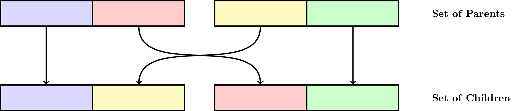

\documentclass{standalone}
\usepackage{tikz}
\usetikzlibrary{shapes.multipart}
\usetikzlibrary{positioning}
\tikzset{
chromosome/.style 2 args={
rectangle split ,
rectangle split parts=2,
rectangle split horizontal,
rectangle split part fill={#1,#2},
draw=black, very thick,
minimum height=2.5em,
text width=3.0cm,
inner sep=2pt,
text centered,
}
}
\begin{document}
\begin{tikzpicture}
%% Rectangles
% Set of Parents
\node [chromosome={blue!15}{red!20}] (a) { \nodepart{two} } ;
\node [chromosome={yellow!30}{green!20}, right = of a] (b) { \nodepart{two} } ;
% Set of Children
\node [chromosome={blue!15}{yellow!30}, below = 2 cm of a] (c) { \nodepart{two} } ;
\node [chromosome={red!20}{green!20}, right = of c] (d) { \nodepart{two} } ;
% Labels
\node[right = of b] () {\textbf{Set of Parents}};
\node[right = of d] () {\textbf{Set of Children}};
% Paths
\path [->, very thick] (a.one south) edge[] node {}(c.one north);
\path [->, very thick] (a.two south) edge[out=-90, in=90] node {}(d.one north);
\path [->, very thick] (b.one south) edge[out=-90, in=90] node {}(c.two north);
\path [->, very thick] (b.two south) edge[] node {}(d.two north);
\end{tikzpicture}
\end{document}Created by David Li